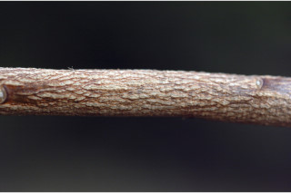
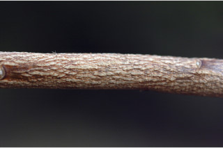
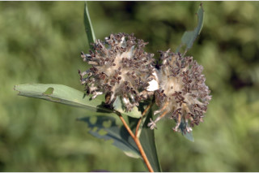
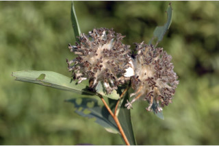

Small trees up to 7 m tall.
7 ಮೀ. ಎತ್ತರದವರೆಗಿನ ಸಣ್ಣ ಮರಗಳು.
Small trees up to 7 m tall.
சிறிய மரம் 7 மீ. உயரம் வரை வளரக்கூடியது.
Bark brownish, irregularly scaly when mature; blaze yellowish.
ತೊಗಟೆ ಕಂದು ಬಣ್ಣದಲ್ಲಿದ್ದು,ಬಲಿತಾಗ ಅನಿಯತವಾಗಿ ಚಕ್ಕೆಯೆದ್ದಿರುತ್ತದೆ;ಕಚ್ಚು ಮಾಡಿದ ಜಾಗ ಹಳದಿ ಛಾಯೆಯಲ್ಲಿರುತ್ತದೆ.
Bark brownish, irregularly scaly when mature; blaze yellowish.
மரத்தின் பட்டை ப்ரவுன் நிறமானது, முதிரும் போது ஒழுங்கற்ற செதில்களாக உதிருபவை; உள்பட்டை மஞ்சள் நிறமானது.
Young branchlets angular to terete, pubescent when young, later glabrous.
ಕಿರುಕೊಂಬೆಗಳು ಕೋನಯುಕ್ತದಿಂದ ದುಂಡಾಗಿರುವ ಮಾದರಿಯವರೆಗಿರುತ್ತವೆ, ಎಳೆಯ -ದಾಗಿದ್ದಾಗ ಮೃದುತುಪ್ಪಳದಿಂದ ಕೂಡಿರುತ್ತವೆ ನಂತರ ರೋಮರಹಿತವಾಗಿರುತ್ತವೆ.
Young branchlets angular to terete, pubescent when young, later glabrous.
சிறிய நுனிக்கிளைகள் குறுக்குவெட்டுத் தோற்றத்தில் கோணங்களுடையது முதல் வளையமானது, இளம்பருவத்தில் உரோமங்களுடையது, முதிரும் போது உரோமங்களற்றது.
Leaves simple, alternate, spiral, clustered at twig ends; petiole 0.3 cm long, slender, planoconvex in cross section, pubescent when young; lamina 4-8.5 x 1-2 cm, narrow elliptic to elliptic-obovate, apex acute with mucronate tip, base obtuse or attenuate, margin entire, pubescent beneath; midrib flat or slightly canaliculate above; secondary_nerves up to 10 pairs, not prominent; tertiary_nerves broadly reticulate or obscure.
ಎಲೆಗಳು ಸರಳವಾಗಿದ್ದು ಪರ್ಯಾಯ ಮತ್ತು ಸುತ್ತು ಜೋಡನಾ ವ್ಯವಸ್ಥೆಯಲ್ಲಿದ್ದು ಕುಡಿಕೊಂಬೆಗಳ ತುದಿಯಲ್ಲಿ ಗುಂಪಾಗಿರುತ್ತವೆ; ತೊಟ್ಟುಗಳು 0.3 ಸೆಂ.ಮೀ. ಉದ್ದವಿದ್ದು, ತೆಳುವಾಗಿರುತ್ತವೆ ಅಡ್ಡ ಸೀಳಿದಾಗ ಸಪಾಟ ಪೀನ ಮಧ್ಯದ ಆಕಾರ ಹೊಂದಿರುತ್ತವೆ ಮತ್ತು ಎಳೆಯದಾಗಿದ್ದಾಗ ಮೃದುತುಪ್ಪಳದಿಂದ ಕೂಡಿರುತ್ತವೆ ;ಪತ್ರಗಳು 4 – 8.5 X-1-2 ಸೆಂ.ಮೀ. ಗಾತ್ರ, ಸಂಕುಚಿತ ಅಂಡವೃತ್ತದಿಂದ ಅಂಡವೃತ್ತ - ಬುಗುರಿವರೆಗಿನ ಆಕಾರ ,ಅಗ್ರದಲ್ಲಿ ಮೊನಚು ಮುಳ್ಳನ್ನು ಹೊಂದಿರುವ ಚೂಪಾದ ತುದಿ,ಚೂಪಲ್ಲದ ಅಥವಾ ಒಳಬಾಗಿದ ಬುಡ, ನಯವಾದ ಅಂಚು ಹೊಂದಿದ್ದು ತಳಭಾಗ ಮೃದುತುಪ್ಪಳದಿಂದ ಕೂಡಿರುತ್ತದೆ;ಮಧ್ಯನಾಳ ಪತ್ರದ ಮೇಲ್ಭಾಗದಲ್ಲಿ ಚಪ್ಪಟೆ ಯಾಗಿರುತ್ತದೆ ಅಥವಾ ಸ್ವಲ್ಪಮಟ್ಟಿನ ಕಾಲುವೆಗೆರೆ ಸಮೇತವಿರುತ್ತದೆ;ಎರಡನೇ ದರ್ಜೆಯ ನಾಳಗಳು ಅಂದಾಜು10 ಜೋಡಿಗಳವರೆಗಿದ್ದು ಪ್ರಮುಖವಾಗಿರುವುದಿಲ್ಲ; ಮೂರನೇ ದರ್ಜೆಯ ನಾಳಗಳುವಿಶಾಲ ಜಾಲಬಂಧ ನಾಳ ವಿನ್ಯಾಸದಲ್ಲಿರುತ್ತವೆ ಅಥವಾ ಅಸ್ಪಷ್ಟವಾಗಿರುತ್ತವೆ.
Leaves simple, alternate, spiral, clustered at twig ends; petiole 0.3 cm long, slender, planoconvex in cross section, pubescent when young; lamina 4-8.5 x 1-2 cm, narrow elliptic to elliptic-obovate, apex acute with mucronate tip, base obtuse or attenuate, margin entire, pubescent beneath; midrib flat or slightly canaliculate above; secondary_nerves up to 10 pairs, not prominent; tertiary_nerves broadly reticulate or obscure.
இலைகள் தனித்தவை, மாற்றுஅடுக்கமானவை, சுழல் போன்று அமைந்தவை, சிறுகிளைகளின் நுனியில் இலைகள் கூட்டமாக மற்றும் நெருக்கமாக காணப்படும்; இலைக்காம்பு 0.3 செ.மீ. நீளமானது, மெல்லியவை, குறுக்குவெட்டுத் தோற்றத்தில் பிளேனோகான்வக்ஸ், இளம்பருவத்தில் உரோமங்களுடையது; இலை அலகு 4-8.5 X 1-2 செ.மீ., குறுகிய நீள்வட்ட வடிவானது முதல் நீள்வட்டம்-தலைகீழ் முட்டை வடிவானது, அலகின் நுனி கூரியதுடன் அதன் முனை மூயூக்கரனேட், அலகின் தளம் மெட்டையானது அல்லது அட்டனுவேட், அலகின் விளிம்பு முழுமையானது, அலகின் கீழ்பரப்பு உரோமங்களுடையது; மையநரம்பு மேற்புறத்தில் அலகின் பரப்பிற்கு சமமானது அல்லது அலகின் பரப்பைவிட பள்ளமானது; இரண்டாம் நிலை நரம்புகள் 10 ஜோடிகள், தெளிவற்றது; மூன்றாம் நிலை நரம்புகள் அகன்ற வலைப்பின்னல் போன்றவை அல்லது கண்களுக்கு புலப்படாது.
Flowers yellow, in terminal heads, with involucrate silky bracts; pedicel 0.2 cm long.
ಹೂಗಳು ಹಳದಿ ಬಣ್ಣದಲ್ಲಿದ್ದು, ತುದಿಯಲ್ಲಿನ ಚೆಂಡು ಮಂಜರಿಯಲ್ಲಿದ್ದು ರೇಷ್ಮೆಯಂತಹ ಸಹಪತ್ರಕಗಳ ಚಕ್ರದ ವಲಯದ ಸಮೇತವಿರುತ್ತವೆ;ತೊಟ್ಟು 0.2 ಸೆಂ.ಮೀ. ಉದ್ದವಿರುತ್ತದೆ.
Flowers yellow, in terminal heads, with involucrate silky bracts; pedicel 0.2 cm long.
மலர்கள் மஞ்சள் நிறமானது, தண்டின் நுனியில் காணப்படும் சீரமஞ்சரி,, மெண்மையான உரோமங்களுடைய பூவடிச்செதில் உடையது; மலர்காம்பு 0.2 செ.மீ. நீளமானது.
Fruit indehiscent, dry, small, 1-seeded.
ಫಲಗಳು ಬಿರಿಯದ,ಒಣ ಮಾದರಿಯವುಗಳಾಗಿದ್ದು ಸಣ್ಣ ಗಾತ್ರದಲ್ಲಿರುತ್ತವೆ, ಒಂದು ಬೀಜವನ್ನೊಳಗೊಂಡಿರುತ್ತವೆ.
Fruit indehiscent, dry, small, 1-seeded.
உலர் வெடியாக்கனி, சிறியவை, ஒர் விதையுடையது.
 



 
